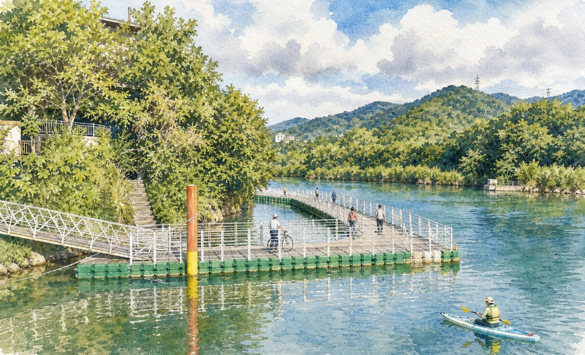
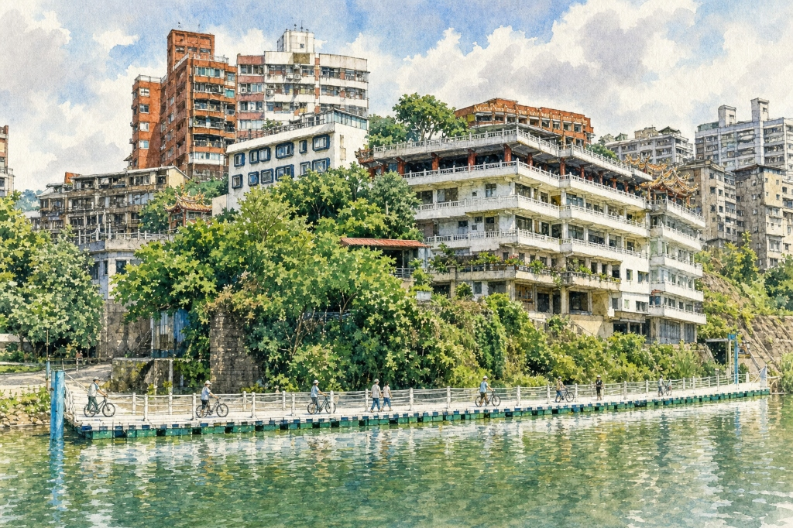
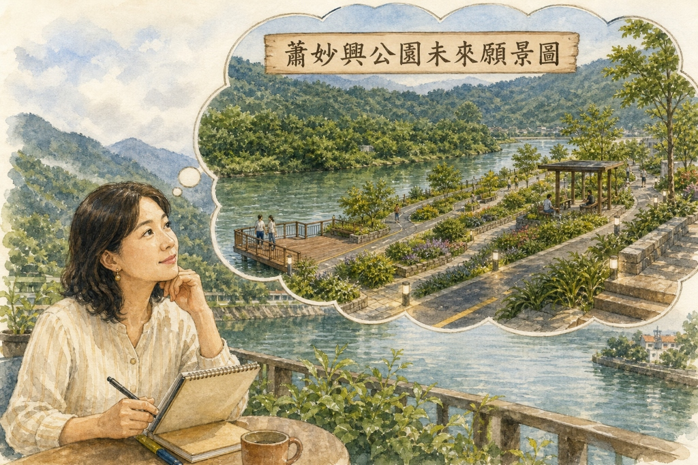

蕭妙興公園
文/碧珠
一、水岸起點：隱藏的制水門
在青潭(一)公車站下了車，碧波蕩漾的新店溪與兩岸青翠的山巒即進入眼簾，沿著階梯下切至河邊，赫然發現住家的階梯旁有個石塊，就是隱藏在青潭溪與新店溪匯流處的「第二制水門」。
二、一錘一鑿：開天宮的引水石硿
清乾隆年間，墾戶郭錫瑠與大坪林五庄墾首蕭妙興等人在青潭大溪築壩攔水，「斗門」即是台語擋水、調節水量的制水門。兩百多年前的先民，首要克服泰雅族的侵擊，在此設下大坪林圳的引水起點，一錘一鑿在開天宮下方巨大的砂岩石壁上，硬是挖出了長達百公尺的「引水石硿」，成功將滾滾清泉引向大坪林平原，滋養了後來的七張、十二張與十四張……等農田。可是誰會記得大坪林五庄蕭妙興等人？

三、歷史重疊：浮筒單車道與古引水道
全長135公尺、耗費800萬的碧潭浮筒自行車牽引道於2019年9月興建完成，從新店渡口經過開天宮下方水域，延伸到青潭溪口。這條單車牽引道的路線不正與兩百多年前的引水道平行嗎？
國小社會科的課本提及大台北的開發史，重要的水利工程之一瑠公圳，使曾經荒蕪地成豐饒的良田，因而多數人知道瑠公圳與郭錫瑠；但大坪林五庄墾首蕭妙興在青潭「斗門頭」及開天宮「引水石硿」的開鑿中同樣功不可沒。

四、規畫展望：讓被遺忘的歷史重見天日
如果在開天宮石硿下方至青潭溪口規畫設計成綠色又有歷史性帶狀的『蕭妙興公園』，當遊客停駐在青潭河濱公園短歇時，遙想當年水利工程的浩大與艱辛，主題公園或許能讓這段被遺忘的歷史重見天日。

深信這條腳踏車道不只是帶給現代人遠離塵囂的悠閒，更緊緊地連結青潭源頭的水文歷史。